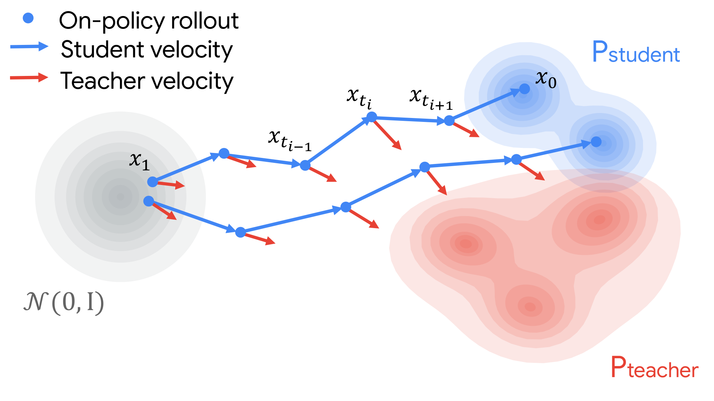
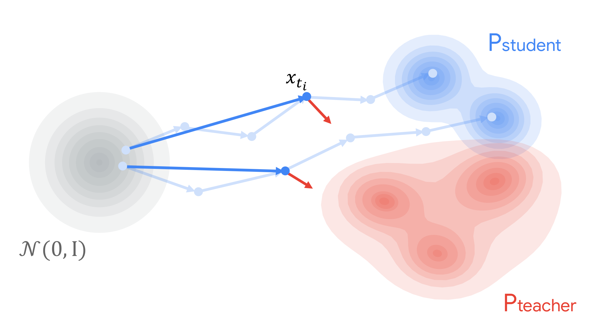
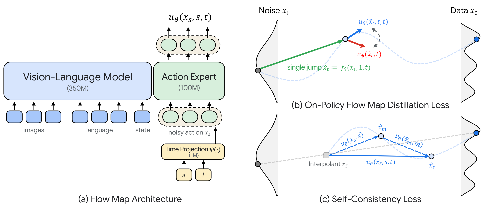
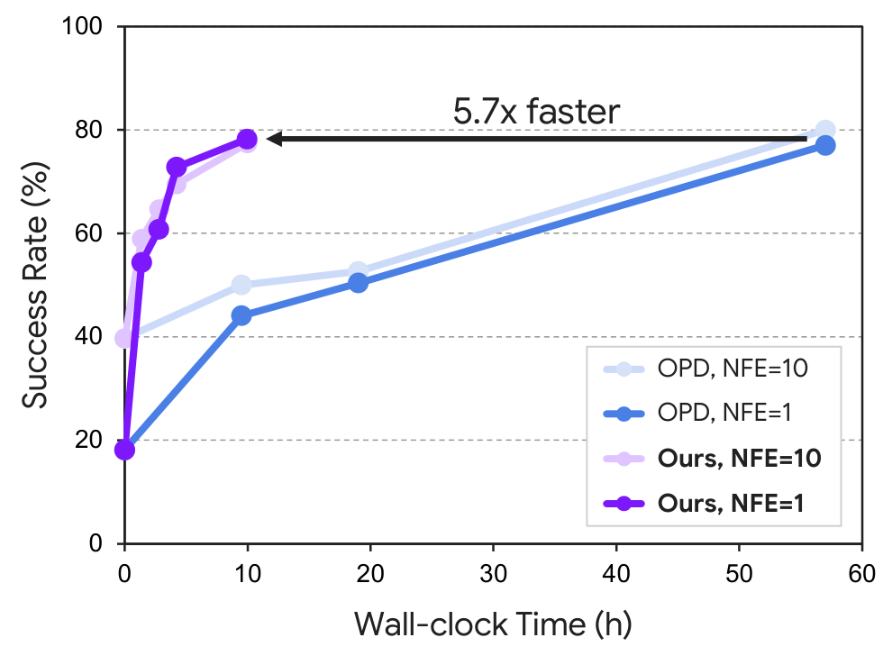

Abstract
Vision-Language-Action (VLA) foundation models have scaled rapidly to enhance manipulation performance and generalizability, but this scaling incurs high computational costs that render real-world deployment increasingly challenging. Existing approaches typically mitigate this issue by designing smaller architectures or reducing the iterative denoising steps in flow-based policies.
In this work, we propose FastOPD, a foundation-to-lightweight VLA framework that enables the practical deployment of large-scale VLAs through efficient on-policy distillation. Specifically, FastOPD adapts a flow map for single-state teacher supervision and combines it with a self-consistency objective to construct a compact student that learns the teacher dynamics. Furthermore, we theoretically demonstrate that minimizing this objective allows the distilled student to recover a distribution on par with that induced by an ideal few-step teacher model.
We evaluate FastOPD across diverse foundation policies in simulation and real-world experiments. On LIBERO, FastOPD retains 84% of the performance of π0.5 with only two inference steps, reducing inference latency by 78.1% while outperforming existing few-step distillation baselines in average success rate. With LingBot-VLA as the teacher, FastOPD improves the single-step success rate over the base student by 15.9 percentage points on RoboTwin 2.0. We further demonstrate its applicability to a World Action Model (WAM) and deploy a compact student distilled from MolmoAct2 on a real robot.
Motivation
How can we apply on-policy distillation in an efficient manner?


(a) Conventional OPD evaluates the teacher at every denoising step, resulting in substantial computational overhead.
(b) FastOPD evaluates teacher at a single sampled state reached by a flow-map jump from noise.
Method

To match the teacher only at sampled on-policy states and propagate this local velocity supervision to finite-step flow maps, we combine On-Policy Flow map Distillation (OPFD) loss with Self-Consistency (SC) loss. We freeze the VLM backbone and fine-tune only the action expert with additional time projection layer.
Benchmark Results
Training and inference efficiency
Training efficiency
FastOPD supervises the student at a single sampled on-policy state instead of across all denoising steps.
This carries over to convergence: FastOPD reaches 78.2% 1 step success in just 10h, while OPD needs roughly 57h to reach a similar level (79.1%), a 5.7× speedup at a fraction of the compute.

Inference efficiency
The distilled student cuts latency by 78% relative to π0.5 on LIBERO (301 → 66 ms) and runs 10× faster than LingBot-VLA on RoboTwin 2.0 (571 → 57 ms).
| Benchmark | Model | Steps | Latency |
|---|---|---|---|
| LIBERO | π0.5 teacher | 10 | 301 ms |
| LIBERO | FastOPD | 2 | 66 ms |
| RoboTwin 2.0 | LingBot-VLA teacher | 10 | 571 ms |
| RoboTwin 2.0 | FastOPD | 1 | 57 ms |
| RoboTwin 2.0 | Fast-WAM teacher | 10 | 503 ms |
| RoboTwin 2.0 | FastOPD | 1 | 57 ms |
Real-World Deployment
From MolmoAct2 (5B) to a compact student (451M) on a physical robot. FastOPD shows faster and more accurate performance than the 10 steps base student, improving the success rate from 44% to 50% while cutting the execution time from 19.32s to 17.38s.
Few-step control on a YAM robot
Using MolmoAct2 as the teacher, the distilled student achieves 50% success with 4 steps, compared with 42% for the base SmolVLA at the same step count.
Compared with the 10 steps base student, task completion time decreases from 19.32s to 17.38s.
BibTeX
@misc{oh_fastopd,
title = {FastOPD: On-Policy Distillation for Lightweight VLA Deployment},
author = {Oh, Yoojin and Kim, Jeongsol and Seo, Yeonwoo and
Park, Jangho and Jin, Seonghyun and Park, Sunwoo and
Kim, Youngmin and Jun, Youngjun and Choi, Kyumin and
Ye, Jong Chul},
note = {Preprint},
url = {https://finallyupper.github.io/fastopd/}
}